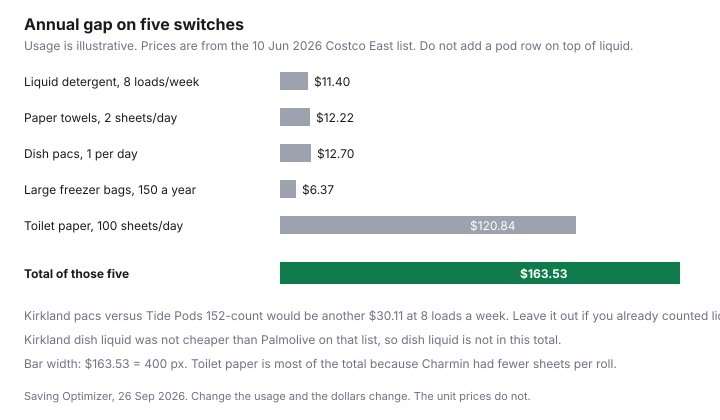

Household Items and Supplies · Canada
Kirkland, Great Value, No Name, Life Brand: Store-Brand Household Products Worth Switching to in Canada
A store brand is a label on a banner, not a promise that the jug was filled in the same plant as the national brand beside it. This page stays on household goods: paper, bags, laundry, dish, foil. Food swaps live on the grocery guides. Every dollar below is either a price from a page opened on 26 Sep 2026 or arithmetic on that price, with the usage labelled as illustrative.
Key takeaways
- No factory name for Kirkland, Great Value, No Name, or Life Brand household goods was on a page opened for this draft. A private-label disinfectant, under Health Canada's biocide labelling guidance, has to match the authorized product. That rule does not cover paper towels.
- On the Costco East list posted 10 Jun 2026, Kirkland beat Bounty on towels, Ziploc on large freezer bags, Tide on advertised laundry loads, and Charmin on sheets. Kirkland dish liquid lost to Palmolive.
- Five switches at labelled use add to $163.53 a year. Toilet paper is $120.84 of that, because Charmin had fewer sheets in the pack. Pods are a separate $30.11 and are not added on top of liquid.
- Bleach, a second brand of trash bag, Great Value, Life Brand, Compliments, and Selection had no household shelf price on a page that opened. Those rows stay blank.
- Laundry, dishwasher pacs, and toilet paper are test-first. Feel and residue are yours. The unit price is not.
Who makes store brands—and why quality often matches
The heading asks who makes them. The honest answer from this build is: a factory name was not opened. Walmart.ca returned a block page. No Loblaw, Shoppers, Sobeys, or Metro corporate page naming a household co-packer was opened on 26 Sep 2026. Repeating a forum guess would be inventing a plant. The grocery store-brand guide is where food labels are compared. This page does not copy a manufacturer claim out of that guide into a paper-towel sentence.
Two sourced facts are narrower than "quality often matches," and they are the only ones used here. Dollarama's 2026 annual information form, information stated as at 1 February 2026, says private-label and national-brand products were 65 percent and 35 percent of fiscal 2026 sales for the Canadian segment, and that the company develops design, packaging, and labelling concepts for private-label brands by dealing with overseas vendors. That is a sourcing description. It is not a named plant, and it is not a cleaning test. The dollar-store guide uses the same filing for the $0.25 to $5.00 price range.
The second fact is about disinfectants, not detergent. Health Canada's "Guidance on labelling requirements for biocides: General labelling considerations," opened 26 Sep 2026, says a private label is an authorized biocide sold under a store's trade dress. The brand name, the market authorization holder, the conditions of use, and the identification number must match the initial biocide. Formulation and packaging must match as well. That is why a store-brand disinfectant can be the same product as the one it copies: the guidance requires it, for biocides. It says nothing about whether Kirkland paper towel matches Bounty in softness. "Quality often matches" is a lead this page does not treat as a test result. Match the unit price. Then match the job in your own sink.
Switch now: paper towels, trash bags, dish soap, bleach, zip bags, foil
Paper towels have a dated gap. Kirkland, 12 rolls of 160 sheets, 1,920 sheets, at $24.99, is $1.30 per 100 sheets. Bounty Plus, 12 rolls of 91 sheets, 1,092 sheets, at $32.49, is $2.98 per 100 sheets. Sponge Towels, 12 rolls of 106 sheets at $21.99 after a $6.00 instant saving the list said expired 5 Jul 2026, is $1.73. At an illustrative two sheets a day, 730 sheets a year, Kirkland is $9.50 and Bounty is $21.72. The difference is $12.22. Sheet size was not printed, so this is per sheet, not per square metre. If you use fewer Bounty sheets because each one is larger, the $12.22 shrinks. Photograph the sheet dimensions next time. Until then the switch that the arithmetic supports is Kirkland against Bounty on sheet count.
Trash bags do not have a competitor on the list. Kirkland large bags, 100 at $14.99, are 14.99 cents each. Clear bags, 60 at $12.99, are 21.65 cents. Drawstring kitchen bags, 200 at $25.99, are 13.00 cents. Home and office bags, 320 at $21.99, are 6.87 cents, and they are a different bag. "Switch to the store brand" is not a sentence this page can finish. Write cents per bag for the bag that fits your bin. A cheaper bag that splits is not cheaper.
Dish soap is the row that breaks the habit of assuming the store brand wins. Kirkland dish liquid, 2.66 L at $10.99, is $4.13 per litre. Dawn Platinum, 2.66 L at $14.99, is $5.64 per litre. Palmolive Advanced, 4.27 L at $9.99, is $2.34 per litre. On that warehouse list, the name brand beat Kirkland. A smaller bottle can beat both. PC dishwashing liquid on the No Frills flyer for 24 to 30 Sep 2026, Darren's No Frills at 372 Pacific Ave, Toronto, was $1.00 for 638 or 739 mL. That is $1.57 per litre at 638 mL and $1.35 per litre at 739 mL. Switch to the lower litre, which on these dates is PC or Palmolive, not Kirkland. The Costco household guide makes the same point in the aisle.
Bleach has no price on either page. There is no cents-per-litre and no store-brand saving to print. Buy the jug whose label you will follow, and do not mix it with anything else. The DIY guide quotes Health Canada's mixing warning. A cheap bleach you then mix with vinegar is not a saving.
Zip bags, the large freezer size, do have a gap. Kirkland, six boxes of 32, 192 bags, at $19.99, is 10.41 cents a bag. Ziploc large freezer, three boxes of 50, 150 bags, at $21.99, is 14.66 cents. At an illustrative 150 bags a year, Kirkland is $15.62 and Ziploc is $21.99. The difference is $6.37. That assumes the bags are the same job. The list did not print thickness. If Ziploc is the only one that does not leak in your freezer, the $6.37 is the price of that leak. Sandwich bags were only priced as Ziploc, four boxes of 150 at $19.99, 3.33 cents each, with no Kirkland sandwich row.
Foil went the other way, and it went between two Alcan rolls, not toward a store brand. Alcan heavy duty, 45 cm by 16.8 m, area 7.56 square metres, was $15.99 after a $4.00 saving the list said expired 21 Jun 2026, which is $2.12 per square metre. Alcan Plus Strong, 30 cm by 200 m, area 60 square metres, was $31.89, which is $0.53 per square metre. A three-pack of Alcan at $16.99 had no length, and Kirkland plastic wrap, a two-pack at $19.99, had no dimensions. The longer name-brand roll is the unit-price win on the lines that printed a length. Do not "switch to Kirkland foil" from this page. There is no Kirkland foil measurement to divide.
Test first: laundry detergent, dishwasher pods, toilet paper
Laundry is a unit price plus a dose. Kirkland liquid, 146 washloads at $19.99, is 13.69 cents per advertised load. Tide Original, 146 loads at $23.99, is 16.43 cents, after a $6.00 instant saving the list said expired 5 Jul 2026. The gap is 2.74 cents a load. Eight loads a week is 416 loads. 416 times 2.74 cents is $11.40. That is the year if you pour the line the load count assumes. The detergent guide shows what a double pour does to both brands. Test one jug of each on the same soils. If Kirkland leaves a residue you will not live with, the $11.40 is not available to you. If you cannot tell, the logo was the product.
Pods are the same test with a larger gap, and they are not a second saving on top of the liquid. Kirkland pacs, 152 at $26.99, are 17.76 cents. Tide Pods Spring Meadow, 152 at $37.99, are 24.99 cents. The gap is 7.23 cents. At 416 loads that is $30.11. Count the pods only if pods are what you use. Counting $11.40 and $30.11 is counting two detergents for one washer. Dishwasher pacs are a different machine. Kirkland Ultra Shine, 115 pacs at $15.99, is 13.90 cents. Cascade Power Clean, 115 at $19.99 after a $5.00 saving the list said expired 21 Jun 2026, is 17.38 cents. One pac a day, illustrative, is a $12.70 gap. Spots on glasses are the test. The unit price does not settle the spots.
Toilet paper is mostly arithmetic, and the feel is the test. Kirkland, 30 rolls of 380 sheets, 11,400 sheets, at $23.99, is 21.04 cents per 100 sheets. Charmin Ultra Soft, 30 rolls of 200 sheets, 6,000 sheets, at $32.49, is 54.15 cents. At an illustrative 100 sheets a day, 36,500 sheets, Kirkland is $76.81 and Charmin is $197.65. The gap is $120.84. Ply for Kirkland was not on the list line. Cashmere Premium 2-ply, after its dated saving, was 21.49 cents, almost Kirkland. If your household uses fewer Charmin sheets, write the real count for a week before you treat $120.84 as cash. The sheet-count guide is the formula. Royale, Purex, No Name tissue, and Great Value tissue were not priced.
Keep name brand when: specialty stain removers and sensitive-skin needs
A specialty stain remover earns its place when you have the stain and the store brand does not lift it. No stain-remover price was on the cleaning list. There is no annual figure for "keep the name brand." Keep the bottle you have already watched work on grease, blood, or ink, and do not buy a second bottle for a stain you get twice a year. That is a cupboard decision, not a ranking.
Sensitive skin is the ingredient list. Kirkland Free and Clear liquid was 146 loads at $19.99, the same 13.69 cents as the regular Kirkland jug. Tide Free and Gentle was 100 loads at $24.99, 24.99 cents. The free-and-clear store brand was not more expensive than the regular store brand on this list. The name-brand gentle liquid was. If a household member reacts, the test is that person's skin, on one product at a time, not a website's word "gentle." Stop the product that causes the reaction. Do not stack three "free" jugs to feel safer.
Canadian private-label map by banner (Costco, Walmart, Loblaw, Shoppers, Sobeys, Metro)
The map below is what a shopper can verify from pages opened for this draft. It is not an ownership chart. Great Value, Life Brand, Compliments, and Selection appear because those are the labels in the question people ask. A price for them was not opened. Points on a household bottle, if the banner awards them, are the PC Optimum guide. This page does not restate an earn rate.
| Banner | Label shoppers ask about | What this draft opened |
|---|---|---|
| Costco | Kirkland Signature | On the cleaning list posted 10 Jun 2026: paper, laundry, dish, bags. Not every Kirkland row won. |
| Walmart | Great Value | Walmart.ca product pages did not return a price. No Great Value household figure. |
| Loblaw banners, including No Frills | No Name, President's Choice | No Name vinegar, 1 L, $0.99, and PC dish soap, $1.00 for 638 or 739 mL, on a Toronto No Frills flyer, 24 to 30 Sep 2026. No Name detergent was not priced. |
| Shoppers Drug Mart | Life Brand | No Life Brand household price was opened. |
| Sobeys banners | Compliments | No Compliments household price was opened. Food comparisons are the grocery guide. |
| Metro banners | Selection | No Selection household price was opened. |
| Dollarama | Its own private-label lines | Annual information form, information as at 1 Feb 2026: private label 65 percent of Canadian-segment sales. No household unit price from a Dollarama shelf was opened. |
Annual savings table for a switch of 10 household staples
Ten rows, because the question is ten staples. Five of them have both prices and a labelled year. Those five sum to $163.53. The other five stay in the table so the blanks are visible. The unit-price guide is how you fill a blank on your next trip. The pantry switch guide is the food version of testing one item at a time.
| Staple | Arithmetic | In the $163.53? |
|---|---|---|
| Liquid detergent | 16.43 cents minus 13.69 cents is 2.74 cents. Times 416 loads (8 per week times 52) is $11.40. Tide Original versus Kirkland liquid. | Yes. $11.40 |
| Paper towels | 730 sheets: Bounty $32.49 divided by 1,092 sheets, minus Kirkland $24.99 divided by 1,920 sheets, is $12.22. | Yes. $12.22 |
| Dishwasher pacs | Cascade Power Clean 19.99 divided by 115, minus Kirkland 15.99 divided by 115, times 365 days, is $12.70. | Yes. $12.70 |
| Large freezer bags | 150 bags: Ziploc $21.99 minus Kirkland at 150 times $19.99 divided by 192, which is $15.62. Gap $6.37. | Yes. $6.37 |
| Toilet paper | 36,500 sheets: Charmin $32.49 divided by 6,000 sheets, minus Kirkland $23.99 divided by 11,400, is $120.84. | Yes. $120.84 |
| Dish liquid | Kirkland $4.13 per litre lost to Palmolive at $2.34 and to PC dish soap at $1.35 to $1.57 per litre. | No. Store brand did not win. |
| Trash bags | Kirkland large is 14.99 cents a bag. No second brand was priced. | No. |
| Bleach | No price opened. | No. |
| Foil | Longer Alcan roll was $0.53 per square metre. Shorter Alcan was $2.12. No Kirkland foil dimensions. | No. Name brand had the lower unit on the lines that printed a length. |
| Laundry pods, instead of liquid | 24.99 cents minus 17.76 cents is 7.23 cents. Times 416 loads is $30.11. Tide Pods 152-count versus Kirkland pacs. | No. Would double-count detergent. Use this row only if you do not use the liquid row. |
| Total of the five yes rows | $11.40 + $12.22 + $12.70 + $6.37 + $120.84 | $163.53 |

Sources & date stamps
- Costco East cleaning list, posted 10 Jun 2026, Ontario and Atlantic, flyer window 8 Jun to 5 Jul 2026. Paper, laundry, dish, pacs, bags, and foil prices used above. Instant-saving end dates as printed. Opened 26 Sep 2026.
- No Frills flyer, 24 to 30 Sep 2026, Darren's No Frills, 372 Pacific Ave, Toronto: No Name vinegar not used in the savings total; PC dish soap $1.00 for 638 or 739 mL, used to show Kirkland dish liquid is not the cheap litre.
- Dollarama annual information form, information stated as at 1 Feb 2026: private-label 65 percent and national brands 35 percent of fiscal 2026 Canadian-segment sales; the company develops private-label design, packaging, and labelling with overseas vendors. No plant name.
- Health Canada, Guidance on labelling requirements for biocides: General labelling considerations, opened 26 Sep 2026. Private-label biocides must match the initial biocide. Not applied here to paper, laundry, or foil.
- Great Value, Life Brand, Compliments, Selection, bleach, and a second trash-bag brand: no household price opened. Walmart.ca did not return a product price.
Frequently asked questions
Who makes Canadian store-brand household products?
This page does not name a factory. No dated public source opened on 26 Sep 2026 named the plant behind Kirkland detergent, Great Value, No Name, or Life Brand household goods. Dollarama's 2026 annual information form, information stated as at 1 Feb 2026, says the company develops design, packaging, and labelling for its private-label brands with overseas vendors, and that private-label products were 65 percent of fiscal 2026 Canadian-segment sales. For authorized disinfectants only, Health Canada's biocide labelling guidance says a private-label product must match the initial biocide's brand name, authorization holder, conditions of use, identification number, formulation, and packaging.
Which household products are safe to switch first?
Switch first where a dated unit price already wins and the job is one you do every week. On the Costco East list posted 10 Jun 2026, Kirkland paper towel was $1.30 per 100 sheets against Bounty Plus at $2.98, and Kirkland large freezer bags were 10.41 cents against Ziploc at 14.66 cents. Dish liquid is not that row: Palmolive was $2.34 per litre and Kirkland was $4.13. Bleach, a competing trash bag, and a Kirkland foil with printed dimensions were not priced, so they are not a first switch.
Is store-brand laundry detergent as good?
No laboratory panel was opened, so this page does not say it cleans as well. Kirkland liquid was 13.69 cents per advertised load and Tide Original was 16.43 cents on that 10 Jun 2026 list. At an illustrative 8 loads a week, 416 loads, the gap is $11.40 a year. Run both on the same washer and the same soils before you decide the residue is worth 2.74 cents a load.
When should I stick with a name brand?
Stick when the store brand fails a job you can see, or when a skin reaction is why you bought the name. Kirkland Free and Clear was the same $19.99 and 13.69 cents as regular Kirkland liquid on that list, while Tide Free and Gentle was 24.99 cents for 100 loads. A sensitive-skin formula is the ingredient list, not the logo. Specialty stain removers were not priced here. Keep the bottle that lifts the stain you actually get.
How much can switching 10 staples save?
Five dated switches, at the usage labelled on the chart, add to $163.53 a year: liquid detergent $11.40, paper towels $12.22, dishwasher pacs $12.70, freezer bags $6.37, and toilet paper $120.84. Laundry pods would be another $30.11 at 8 loads a week if you use them instead of liquid, not on top of liquid. Dish liquid, trash bags, bleach, and foil are in the table of 10 and are not in that total, because a store-brand win was not verified. Change the usage and the dollars change.